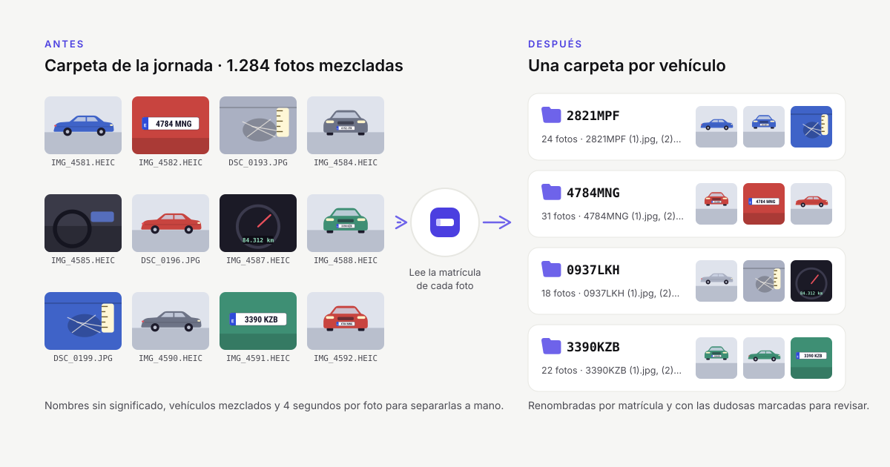
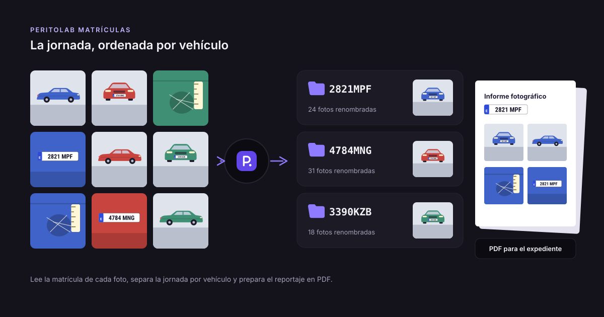
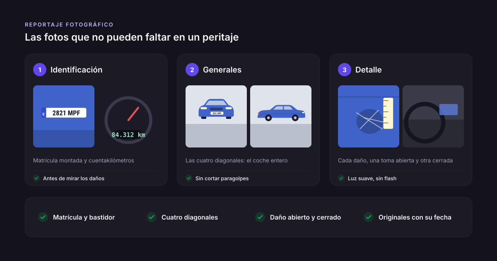
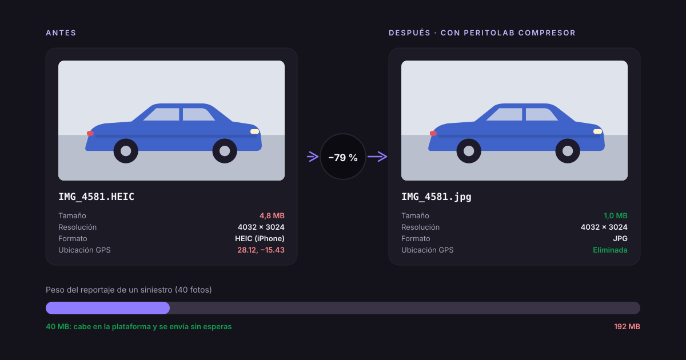

Cómo organizar las fotos de un peritaje por vehículo
Un perito de automóvil puede volver de una campa o de una ronda de talleres con cientos de fotos en el móvil: decenas de vehículos, todos mezclados y con nombres como IMG_4581.HEIC. Antes de redactar nada hay que separarlas, una carpeta por vehículo, y es uno de los trabajos más pesados del día. Esta guía explica cómo hacerlo bien, a mano o de forma automática.

Por qué conviene una carpeta por vehículo
- El expediente queda completo. Cada siniestro tiene su reportaje fotográfico, sin fotos de otro vehículo que se cuelen.
- Se encuentra todo después. Si la carpeta lleva la matrícula en el nombre, buscar un vehículo meses después es inmediato.
- Se envía más rápido. La aseguradora o la plataforma de peritación recibe solo lo de ese siniestro.
El método manual (y por qué cuesta tanto)
- Copia las fotos. Del móvil o de la tarjeta a una carpeta de trabajo, sin borrar los originales.
- Ordénalas por fecha de captura, no por nombre: así las de cada vehículo quedan seguidas.
- Sepáralas. Recórrelas una a una. Cuando aparece una matrícula nueva, crea una carpeta con ese nombre (por ejemplo 1234ABC) y mueve allí sus fotos.
- Las que no tienen matrícula. Las fotos sin matrícula visible (interiores, daños de cerca) van con el vehículo que las rodea en el tiempo.
Mirar cada foto, reconocer el vehículo y arrastrarla lleva unos 4 segundos. Con 150 fotos al día son más de 3 horas al mes, y es fácil equivocarse cuando hay dos coches de flota iguales o fotos de un vehículo vecino.
Consejos para no equivocarte
- Fotografía la matrícula al empezar con cada vehículo, aunque no haga falta para el informe: es la referencia para separar. Lo explicamos en la guía sobre qué fotos hacer en un peritaje.
- Mantén la fecha y hora del móvil bien puestas. El orden de captura es lo que une las fotos de un mismo vehículo.
- No renombres las fotos antes de separarlas. Se pierde el orden original y es más difícil corregir después.
- Trabaja siempre sobre una copia. Si algo sale mal, los originales siguen intactos.
La forma automática
PeritoLab Matrículas hace este trabajo en tu ordenador: lee la matrícula de cada foto, une las fotos de cada vehículo por el orden en que se hicieron y crea una carpeta por matrícula. Antes de copiar nada te enseña el resultado para que revises lo que necesita tu criterio (un vehículo sin matrícula legible, dos coches muy parecidos). Las fotos no salen de tu ordenador en ningún momento.
Sigue leyendo

Programa para las fotos del peritaje: qué mirar antes de elegirloCuánto tiempo te cuesta separar las fotos a mano y qué comprobar en un programa para el peritaje: fotos en local, revisión de dudas, originales y PDF.
Qué fotos hacer en un peritaje de automóvil: la lista completaLista de las fotos de un peritaje de automóvil: identificación, generales y de detalle, cómo fotografiar los daños para que se vean y qué conservar.
Cómo reducir el tamaño de las fotos para enviarlas a la aseguradoraCómo reducir el tamaño de las fotos de un siniestro para la aseguradora o la plataforma de peritación sin perder detalle, y por qué quitar el GPS.